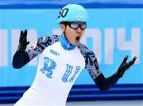
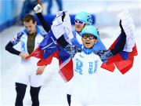
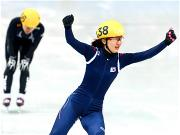
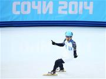
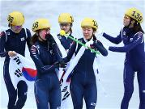
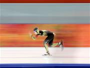
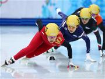
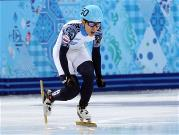
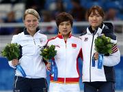
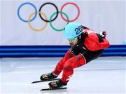

Новости
| Виктор Ан установил новый рекорд в шорт-треке | |
|  | В пятницу российский шорт-трекист Виктор Ан завоевал еще два олимпийских золота и стал шестикратным олимпийским чемпионом – это высшее достижение в этом виде спорта. |

| Ан привел сборную России к золотой медали в эстафете на 5000 метров по шорт-треку | |
|  | Россия во главе со своим лидером Виктором Аном установила новый олимпийский рекорд и завоевала золото в мужской эстафете на 5000 м в шорт-треке. |

| Пак выиграла 1000-метровку в шорт-треке среди женщин | |
|  | Спортсменка из Южной Кореи Пак Сын Хи выиграла в пятницу титул олимпийской чемпионки в женском шорт-треке на дистанции 1000 метров. Эта медаль стала для нее третьей на Играх в Сочи. |

| Новая победа Виктора Ана — золото в шорт-треке: 500 м | |
|  | Во дворце зимнего спорта «Айсберг» сегодня состоятся заключительные розыгрыши медалей в соревнованиях по шорт-треку. |

| Сборная Южной Кореи по шорт-треку завоевала золото в эстафете | |
|  | В женской эстафете на 3000 м по шорт-треку олимпийскую золотую медаль выиграли спортсменки из Южной Кореи, обогнав Канаду и Италию. |

| Покер из олимпийских рекордов | |
|  | За прошедшие соревновательные дни в Сочи было установлено 4 олимпийских рекорда. |

| Драйв шорт-трека, красота фристайла и решающие хоккейные матчи | |
|  | Сегодня спортсмены поведут борьбу за звание олимпийского чемпиона в таких видах, как биатлон, горные лыжи, скоростной бег на коньках, шорт-трек, лыжное двоеборье, фристайл и сноуборд. Кроме того, во вторник будет определен полный состав участников четвертьфинала мужского хоккейного турнира. |

| Шорт-трек: триумф российских спортсменов | |
|  | Во дворце зимнего спорта «Айсберг» состоялись финальные забеги по шорт-треку среди женщин (1500 метров) и мужчин (1000 метров). |

| Олимпийское золото 500-метровки по шорт-треку среди женщин – у Китая | |
|  | Шорт-трекистка из Китая Ли Цзяжоу завоевала золотую медаль Олимпийских игр в забеге на 500 метров. |

| Канадец Шарль Амлен выиграл третье золото в шорт-треке | |
|  | Канадский шорт-трекист Шарль Амлен завоевал третью олимпийскую золотую медаль, победив на дистанции 1500 м среди мужчин. |